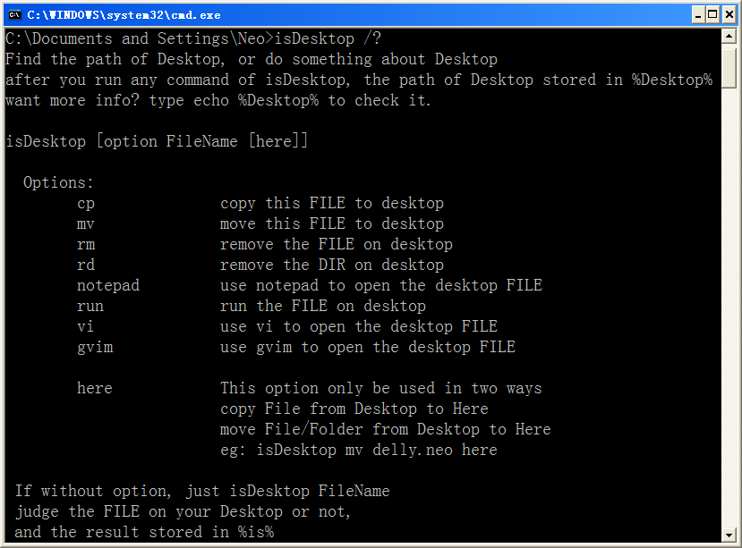

通过实现理想，证明实现理想是可能的；
通过开发开源软件并发布，证明开源软件是可能的；
即使是在中国。
通过开发开源软件并发布，证明开源软件是可能的；
即使是在中国。
isDesktop
获取当前用户桌面的路径，然后根据参数做一些桌面相关的操作。 因为很多情况都需要在桌面上操作，这个命令比较有价值哦~ 使用 call isDesktop 命令之后会生成 %Desktop% 变量，它存储着桌面的完整路径！
@echo off
REM 针对本程序斑驳不负担保责任，欲知详细请查看 GPL.txt
REM 这是自由的程序，欢迎您在特定条件下再发布本程序。
REM
REM 再次感谢使用斑驳的脚本
REM 斑驳敬上
REM
if exist "%userprofile%\Desktop" set Desktop=%userprofile%\Desktop
if exist "%userprofile%\桌面" set Desktop=%userprofile%\桌面
if not defined Desktop for /f "tokens=2*" %%i in ('REG QUERY "HKCU\Software\Microsoft\Windows\CurrentVersion\Explorer\Shell Folders" ^| find "Desktop"') do set Desktop=%%j
if "%~1"=="/?" (
echo Find the path of Desktop, or do something about Desktop > %tmp%\isDesktop.help
echo after you run any command of isDesktop, the path of Desktop stored in %%Desktop%% >> %tmp%\isDesktop.help
echo want more info? type echo %%Desktop%% to check it. >> %tmp%\isDesktop.help
echo. >> %tmp%\isDesktop.help
echo.isDesktop [option FileName [here]] >> %tmp%\isDesktop.help
echo. >> %tmp%\isDesktop.help
echo. Options: >> %tmp%\isDesktop.help
echo. cp copy this FILE to desktop >> %tmp%\isDesktop.help
echo. mv move this FILE to desktop >> %tmp%\isDesktop.help
echo. rm remove the FILE on desktop >> %tmp%\isDesktop.help
echo. rd remove the DIR on desktop >> %tmp%\isDesktop.help
echo. notepad use notepad to open the desktop FILE >> %tmp%\isDesktop.help
echo. run run the FILE on desktop >> %tmp%\isDesktop.help
echo. vi use vi to open the desktop FILE >> %tmp%\isDesktop.help
echo. gvim use gvim to open the desktop FILE >> %tmp%\isDesktop.help
echo. >> %tmp%\isDesktop.help
echo. here This option only be used in two ways >> %tmp%\isDesktop.help
echo. copy File from Desktop to Here >> %tmp%\isDesktop.help
echo. move File/Folder from Desktop to Here >> %tmp%\isDesktop.help
echo. eg: isDesktop mv delly.neo here >> %tmp%\isDesktop.help
echo. >> %tmp%\isDesktop.help
echo. If without option, just isDesktop FileName >> %tmp%\isDesktop.help
echo. judge the FILE on your Desktop or not, >> %tmp%\isDesktop.help
echo. and the result stored in %%is%% >> %tmp%\isDesktop.help
echo. >> %tmp%\isDesktop.help
echo. NEO's Edition is Okay~ >> %tmp%\isDesktop.help
echo. >> %tmp%\isDesktop.help
type %tmp%\isDesktop.help | more
goto :eof
)
if "%~2"=="" (
if "%~1"=="" goto :eof
if exist "%Desktop%\%~1" ( set is=1 ) else (
set is=0
echo Warning: No such file on Desktop!
goto :eof
)
)
echo.cp mv run notepad rm rd vi gvim | find "%~1" > nul
if %errorlevel% EQU 1 (
echo Invaid param. type isDestkop /? for help
goto :eof
)
set is=0
if %3.==here. goto res
if "%~1"=="cp" copy /y "%~2" "%Desktop%\" > nul & goto :eof
if "%~1"=="mv" move "%~2" "%Desktop%" > nul & goto :eof
if "%~1"=="run" "%Desktop%\%~2" & goto :eof
if "%~1"=="notepad" notepad.exe "%Desktop%\%~2" & goto :eof
if "%~1"=="rm" del /f /q "%Desktop%\%~2" > nul & goto :eof
if "%~1"=="rd" rd /s /q "%Desktop%\%~2" > nul & goto :eof
if "%~1"=="vi" vi "%Desktop%\%~2" & goto :eof
if "%~1"=="gvim" gvim "%Desktop%\%~2" & goto :eof
:res
if exist "%Desktop%\%~2" set is=1
if %is%==0 goto ErrNF
if "%~1"=="cp" copy /y "%Desktop%\%~2" . > nul
if "%~1"=="mv" move /y "%Desktop%\%~2" . > nul
goto :eof
:ErrNF
echo. Sorry: Desktop\%~2 doesn't exist!
补充
看源代码稍稍有些头疼，因为在网页上面又想把代码弄得大一些，又想都放在 pre 标签里面， 鱼和熊掌不可兼得嘛，为了推销自己的产品，还是挂上截图给大家瞧瞧吧：

斑驳敬上返回 | 置顶 | 下一页